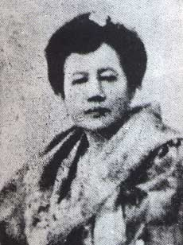
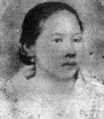
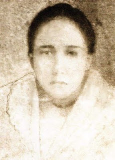

Rizal Life
About Rizal
Doña Teodora was said to have suffered the greatest pain during the delivery of her seventh
child, Jose. Her daughter Narcisa recalled: "I was nine years of age when my mother gave birth
to jose. I recall it vividly because my mother suffered great pain. She labored for a long time.
Her pain was later attributed to the fact that Jose's head was bigger than normal".
A phenom is someone who is exceptionally talented or admired, especially an up-and-comer. Rizal,
especially during his childhood, was none less than a phenom. Jose Rizal's first memory in his
infancy, was his happy days in their family garden when he was three years old. Their courtyard
contained tropical fruit trees, poultry yard, a carriage house, and a stable for the ponies. Because
the young Pepe was weak, sickly, and undersized, he was given the fondest care by his parents, so
his father built a nipa cottage for Pepe to play in the daytime. Memory of his infancy included the
nocturnal walk in the town, especially when there was a moon. Jose also recalled the "aya"
(nursemaid) relating to the Rizal children some fabulous stories, like those about the fairies,
tales of buried treasure, and trees blooming with diamonds.

Don Francisco Mercado
Don Francisco Mercado
Jose's father. Francisco Engracio Rizal Mercado, was a productive farmer from
Biñan Laguna. Don Francisco became tiniente gobernadorcillo (lieutenant governor) in Calamba and
was thus nicknamed Tiniente Kiko. Don Francisco was born on May 11, 1818 in Biñan, Laguna When
he was eight years old, he lost his father He was nonetheless educated as he took Latin and
Philosophy at the College of San Jose in Manila, where he met and fell in love with Teodora
Alonso, a student in the College of Santa Rosa Married on June 28, 1848. they settled down in
Calamba where they were granted lease of a rice farm in the Dominican-owned haciendas.
Doña Teodora Alonso
Jose's mother. Teodora Alonzo (also spelled "Alonso") was an educated and highly
cultured woman from Sta. Cruz. Manila. Common biographies state that Doña Teodora Alonso Quintos
Realonda, also known as "Lolay," was born on November 8 1826 in Santa Cruz. Manila. It is
believed that Doña Teodora's family descended from Lakandula, the last native king of Tondo.
Through the Claveria decree of 1849 which changed the Filipino native surnames, the Alonsos
adopted the surname Realonda. Rizal's mother thus became Teodora Alonso Quintos Realonda.

Doña Teodora Alonso
Rizal's Siblings

Saturnina
Saturnina
The eldest child of Don Francisco and Doña Teodora. Saturnina and her mother
provided Jose the good basic education and by the age of three, Rizal already knee his alphabet.
Paciano Rizal
Rizal's only brother, was born on March 7, 1851 in Calamba, Laguna. He was fondly
addressed by his siblings Ñor Paciano, short for "Senior Paciano". He studied at San Jose
College in Manila, became a farmer, and later a general of the Philippine Revolution.
In December 1896 after Jose's execution, Paciano joined the Katipuneros in Cavite under General
Emilio Aguinaldo.

Paciano

Narcisa
Narcisa Rizal
The third child in the family. Like Saturnina, Narcisa would help in financing
Rizal's studies in Europe.
Olympia Rizal
The fourth child in the family. Jose's first love, Segunda Katigbak, was Olympia's schoolmate
at the La Concordia College.
at the La Concordia College.

Olympia

Luicia
luicia Rizal
The fifth child in the family. She married Mariano Herbosa of Calamba, Laguna.
Lucia's husband died during the cholera epidemic in May 1889 and was refused a Catholic burial
for not going to confession since his marriage to Lucia. In Jose's article in La Solidaridad
titled Una profanacion, he scornfully attacked the friars for declining to bury in "sacred
ground" a "good Christian" simply because he was the "brother-in-law of Rizal".
Maria Rizal
The sixth child in the family. It was her whom Jose talked about wanting to marry
Josephine Bracken when the majority of the family was apparently not amenable to the idea.

Maria

Conception
Conception Rizal
The eight child of Rizal family. She died at the age of three.
Of his sister, it was said that the young Pepe loved most little Concha who was younger than he.
josefa Rizal
The ninth child in the family. She died a spinster. After Jose's martyrdom, the
epileptic Josefa joined the Katipunan and was even supposed to have been elected
the president of its women section. She was one of the original 29 women admitted
to the Katipunan along with Gregoria De Jesus, wife of Andres Bonifacio.
epileptic Josefa joined the Katipunan and was even supposed to have been elected
the president of its women section. She was one of the original 29 women admitted
to the Katipunan along with Gregoria De Jesus, wife of Andres Bonifacio.

Josefa

Trinidad
Trinidad Rizal
The tenth child of the family. She became the custodian of Rizal's last and
greatest poem. Right before Jose's execution Trinidad and their mother visited him in the Fort
Santiago prison cell As they were leaving, Jose handed over to Trining an alcohol cooking stove
a gift from the Pardo de Taveras, whispering, to her in a language which the guards could not
understand. "There is something in it." That "something" was Rizal's elegy now known as "Mi
Ultimo Adios Like Josefa. Paciano, and two nieces. Trinidad joined the Katipunan after Jose's
death.
soledad
The youngest child of the family. Being a teacher, she was arguably the best
educated among Rizal's sisters. In his long and meaty letter to Choleng dated June 6, 1890 Jose
told her sister that he was proud of her for becoming a teacher. He thus counseled her to be a
model of virtues and good qualities "for the one who should teach should be better than the
persons who need her learning"
Soledad